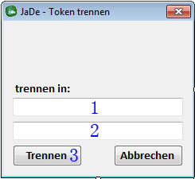

|
JaDe Tokenizer
|
|
JaDe Tokenizer
|
1. Datei-Menü
2. Eingabe-Textbox
3. Satz-Auswahl
4. Tokenisieren Button
5. Token Anzeige
6. Token Auswahl
7. Token-Bearbeiten Button
8. Token-Suchen Button
9. Auswahl für intensive Suche (ja/nein)
10. Wörterbuch Suchergebnisse
Über den Menüepunkt Datei-->Öffnen des Datei-Menüs(1) kann man eine Textdatei öffnen und sich deren Inhalt in der Eingabe-Textbox(2) anzeigen lassen.
Alternativ dazu kann man auch einfach Text manuel in die Eingabe-Textbox(2) eingeben.
Bei einem Klick auf den Tokenisieren-Button(3) wird nun der Text aus der Eingabe-Textbox(2) in Sätze und Token zerlegt.
Sobald dies geschehen ist, ercheinen im Satz-Auswahl-Panel(3) die einzelnen gefundenen Sätze mit jeweils dem ersten Token zur leichteren Identifizierung.
Wählt man nun per Mausklick einen Satz in dem Satz-Auswahl-Panel(3) so erscheint in der Token Anzeige(5) nochmal eine Vorschau des Satzes mit Lücken zwischen den Token.
Außerdem erscheinen die einzelnen Token des gewählten Satzes in der Token Auswahl(6)
In der Token Auswahl(6) hat man die Möglichkeit, durch setzen eines Häkchens in das Kästchen vor einem Token, 1-2 Token auszuwählen.
Hat man nur ein Token gewählt so öffnet sich nach Klick auf den Token-Bearbeiten Button(7) das Bearbeiten-Fenster indem man ein fehlerhaft segmentierten Token in 2 neue Token trennen kann.
Dazu muss man einfach die Zeichen der beiden neuen Token in die Textboxen(1 und 2) eingeben und auf den Trennen-Button(3) klicken.

Hat man 2 nebeneinander liegende Token ausgewählt, werden diese automatisch zu einem neuen Token zusammengefügt.
In der Token Auswahl(6) hat man die Möglichkeit, durch setzen eines Häkchens in das Kästchen vor einem Token, 1Token auszuwählen.
Hat man ein Token ausgewählt kann man noch über die Auswahl für intensive Suche (9) festlegen ob man nach einer genauen Übereinstimmung (Häkchen gesetzt) oder nach Einträgen in denen der Token vorkommt(Häkchen nicht gesetzt) suchen möchte.
Drückt man nun auf den Token-Suchen Button(8) wird der entsprechende Token im Wörterbuch gesucht und die Ergebnisse Angezeigt(10)
 1.7.6.1
1.7.6.1